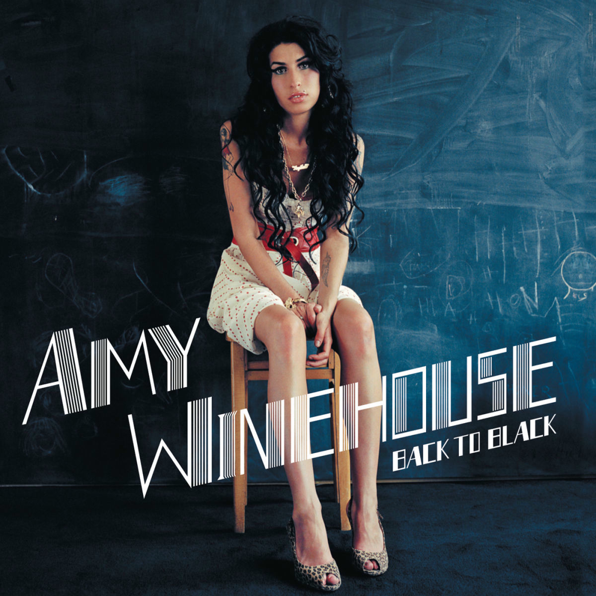

Музичні жанри відрізняються стилем, звучанням та емоційним наповненням.
Кожен жанр має свої характерні особливості та власну аудиторію.
Нижче наведено таблицю з прикладами музичних жанрів.
| Nu Metal | Synth-pop | Pop | R&B |
|---|---|---|---|
|
|
|
 |
| Nu Metal | Synth-pop | Pop | R&B |
| Жанр важкої музики з елементами альтернативного металу та хіп-хопу. | Електронний жанр, у якому активно використовуються синтезатори. | Популярна музика для широкої аудиторії. | Жанр, що поєднує ритмічність, мелодійність і виразний вокал. |